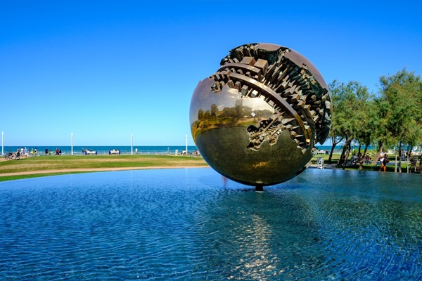

HI! I'M GLORIA AND THIS IS MY LITTLE WEB CORNER
THANKS FOR BEING HERE!
My name is Gloria Scavolini, I’m 27 years old, and I live in the beautiful city of Pesaro, located on the Adriatic coast. I am a curious and passionate person, always seeking new experiences and challenges that can enrich my life.
~ ABOUT ME ~
I like to define myself as a realistic dreamer: I have many dreams and goals, but I always keep my feet on the ground to achieve them. I love living near the sea, which with its rhythm inspires serenity and reflection. I am a great lover of nature and often find myself taking long walks along the beach or in the hills surrounding Pesaro.
~ MY PASSIONS ~
I am a huge fan of music and concerts: I love the energy and emotion of a live performance, which makes me feel truly alive. Technology is another of my great passions; I enjoy exploring the latest innovations and discovering how they can improve our daily lives. I am also a video game enthusiast, which I consider not only a fun pastime but also a way to immerse myself in new and stimulating worlds. Lastly, I have a passion for everything related to the horror genre: from movies to books to video games, I love the thrill and adrenaline that this genre can convey.
~ MY WORK ~
Professionally, I am dedicated to advancing healthcare technology as a Biomedical Engineer working for a software house in the medical field. My role involves the integration of engineering principles with medical and biological sciences to design and develop innovative software solutions that enhance patient care and medical research. I collaborate closely with a multidisciplinary team of developers, clinicians, and researchers to create cutting-edge applications that address critical needs in diagnostics, treatment, and patient management.
My commitment to this field is driven by a passion for improving healthcare delivery and a belief in the transformative power of technology in medicine. Through continuous learning and innovation, I strive to stay at the forefront of biomedical advancements, ensuring that our solutions not only meet current needs but also anticipate future challenges in the ever-evolving landscape of healthcare.
~ A BIT MORE ABOUT ME ~
When I am not busy with work or my passions, I love to travel. Every trip is an opportunity to discover new cultures, meet interesting people, and create unforgettable memories. I also have a deep passion for the Japanese language and culture, which I find incredibly fascinating and enriching.
Here are a few fun facts about me:
I have a knack for solving puzzles and enjoy the challenge of escape rooms. My favorite genre of music is prog metal and electronic, and I never miss a chance to attend a live concert. I have a collection of horror mmanga from author Junji Ito that I’ve been building for years. I am always on the lookout for the latest and greatest video games to play.